Click a topic heading to open it · H = Higher tier only
No words found. Try a different spelling.
T1
Key Concepts in Chemistry
15 words
▼
Atom
Greek atomos = "cannot be cut"
The smallest particle of an element. Everything around you is made of atoms. Atoms are too small to see with the naked eye.
"A carbon atom is found in all living things."
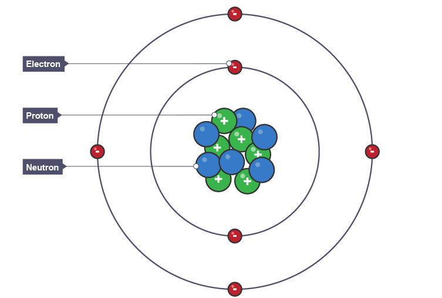
Element
Latin elementum = "basic principle"
A pure substance made of only one type of atom. It cannot be broken down into simpler substances by chemical reactions. There are 118 known elements.
"Oxygen is an element — it only contains oxygen atoms."
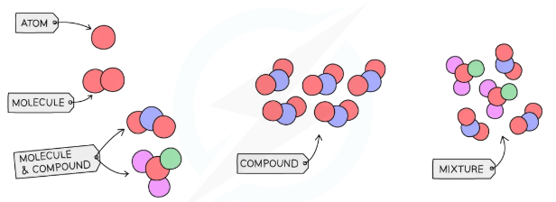
Compound
Latin componere = "to put together"
A substance made of two or more different elements that are chemically bonded together. Its properties are different from the original elements.
"Water (H₂O) is a compound of hydrogen and oxygen."
Mixture
Latin mixtura = "a blending"
Two or more substances that are physically combined but NOT chemically joined. The substances keep their own properties and can be separated again.
"Salt and sand is a mixture — the grains are mixed but not joined."
Ion
Greek ion = "going" (it moves towards an electrode)
An atom or group of atoms that has gained or lost electrons, giving it an electrical charge. Positive ions have lost electrons; negative ions have gained electrons.
"Sodium loses one electron to become Na⁺, a positive ion."
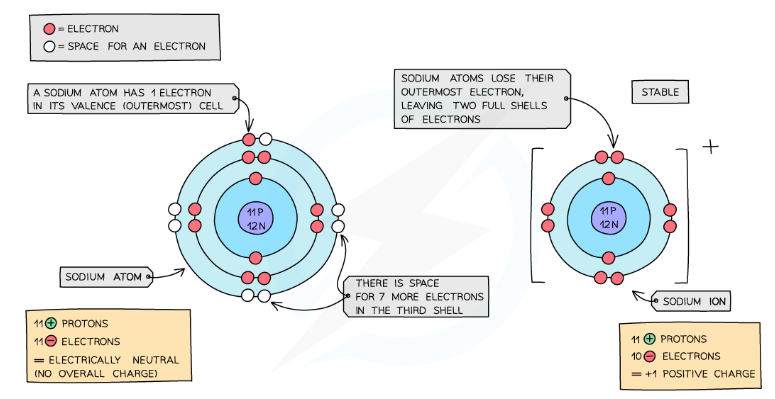
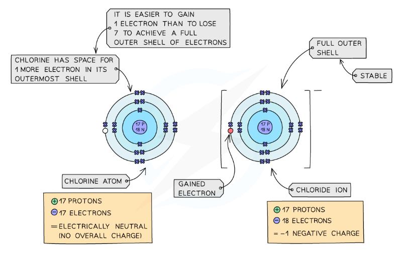
Isotope
Greek isos = "equal" + topos = "place" (same place on the periodic table)
Atoms of the same element that have the same number of protons but a different number of neutrons. Isotopes have the same atomic number but different mass numbers.
"Carbon-12 and Carbon-14 are both carbon atoms, but C-14 has 2 extra neutrons."
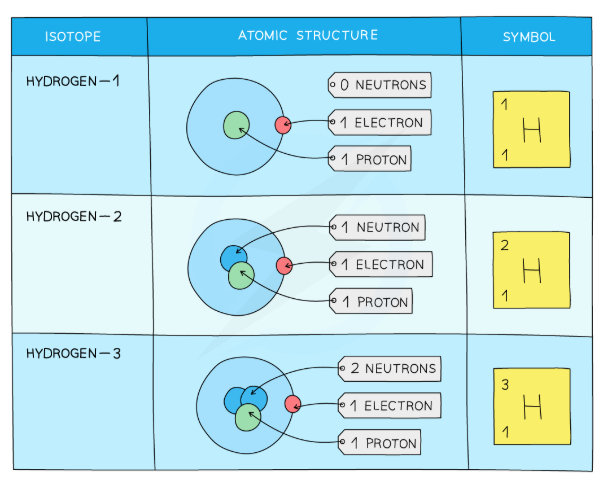
Proton
Greek proton = "the first thing"
A positively charged particle found in the nucleus (centre) of an atom. The number of protons in an atom determines which element it is.
"Hydrogen has 1 proton. Carbon has 6 protons."
Neutron
Latin neuter = "neither one nor the other" (neutral = no charge)
A particle with no electrical charge found in the nucleus alongside protons. Neutrons add to the mass of an atom but do not change its chemical properties.
"Carbon has 6 neutrons. Adding a neutron makes a different isotope."
Electron
Greek elektron = "amber" (ancient Greeks made sparks with amber — an early discovery of static electricity)
A tiny, negatively charged particle that orbits the nucleus in layers called shells (or energy levels). The outer electrons control how an atom reacts.
"Oxygen has 8 electrons: 2 in the first shell and 6 in the second."
Atomic number
The number of protons in the nucleus of an atom. Every element has a unique atomic number. It is shown at the bottom of each element's box on the periodic table.
"Sodium has atomic number 11 — it has 11 protons (and 11 electrons in a neutral atom)."
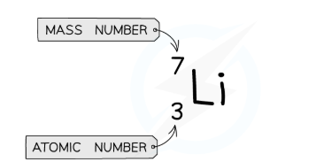
Mass number
The total number of protons AND neutrons in the nucleus of an atom. Also called the nucleon number. Shown at the top of an element's box on the periodic table.
"Carbon-12 has 6 protons + 6 neutrons = mass number 12."
Relative atomic mass (Aᵣ)
The average mass of the atoms of an element compared to 1/12 of a carbon-12 atom. It takes into account all isotopes and how common each one is.
"Chlorine's Aᵣ = 35.5 because it is a mix of ³⁵Cl and ³⁷Cl isotopes."
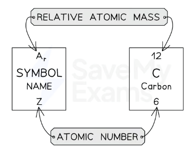
Relative formula mass (Mᵣ)
The sum of all the relative atomic masses of every atom in a chemical formula. Found by multiplying the Aᵣ of each element by how many atoms of it appear, then adding them all up.
"Mᵣ of H₂O = (2 × 1) + 16 = 18"
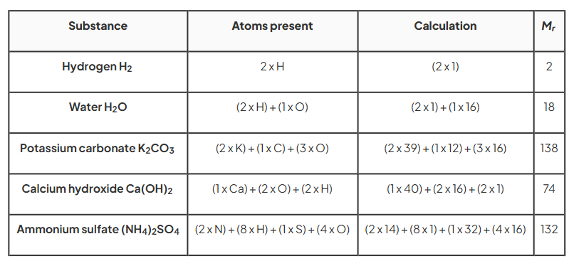
Mole (mol)
Latin moles = "a large mass or pile"
The unit chemists use to count huge numbers of particles. 1 mole = 6.02 × 10²³ particles. The mass of 1 mole in grams equals the Mᵣ.
"1 mole of carbon = 12 g. 1 mole of water = 18 g."
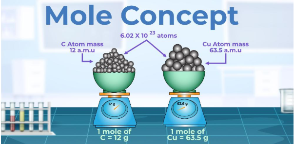
Electron configuration
The arrangement of electrons in shells (energy levels) around an atom's nucleus. Shells fill from the inside outwards: shell 1 holds 2, shell 2 holds 8, shell 3 holds 8.
"Sodium's electron configuration is 2,8,1 — meaning 2 electrons in shell 1, 8 in shell 2, 1 in shell 3."
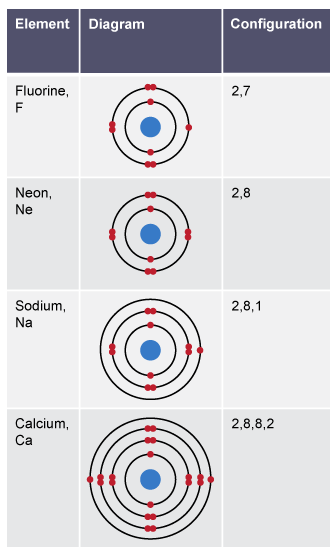
T2
States of Matter and Mixtures
14 words
▼
Solid
A state of matter where particles are tightly packed in a fixed, regular pattern. They can only vibrate — they cannot move around. A solid has a fixed shape and a fixed volume.
"Ice, iron, and sugar are solids at room temperature."
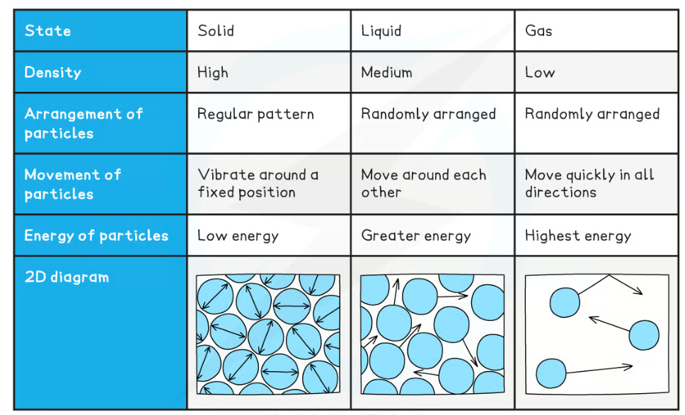
Liquid
A state of matter where particles are close together but can move past each other. A liquid has a fixed volume but takes the shape of its container.
"Water is a liquid — it flows and fills its container."
Gas
A state of matter where particles are far apart and move quickly in all directions. A gas has no fixed shape or volume — it fills any container it is in.
"Steam is a gas. It spreads out to fill the room."
Melting point
The temperature at which a solid turns into a liquid. At this temperature, enough energy has been added to break the forces holding particles in place.
"Ice has a melting point of 0°C."
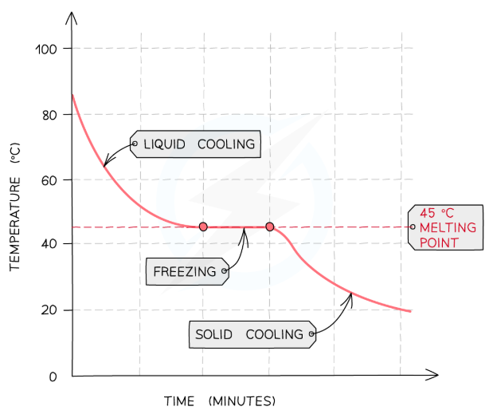
Boiling point
The temperature at which a liquid turns into a gas throughout the whole liquid. Bubbles form all through the liquid, not just at the surface.
"Water's boiling point is 100°C at normal pressure."
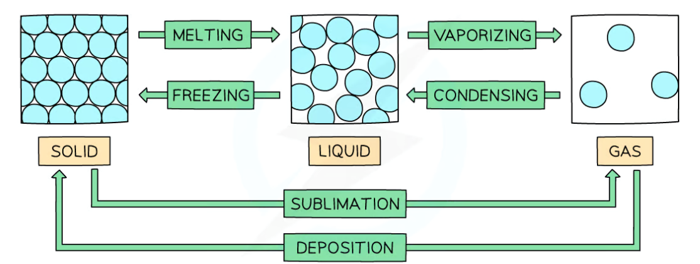
Evaporation
Latin evaporare = "to disperse in vapour"
When a liquid slowly changes to a gas at its surface, at temperatures BELOW the boiling point. The most energetic particles escape from the surface.
"Puddles dry up by evaporation on a warm day, even without boiling."
Condensation
Latin condensare = "to make dense, to compress"
When a gas cools down and turns into a liquid. Particles slow down, come closer together, and form liquid droplets.
"Water droplets on a cold window are condensation — warm air touching cold glass."
Sublimation
Latin sublimare = "to raise up, to elevate"
When a solid changes directly into a gas WITHOUT passing through the liquid state first. This happens with only a few substances.
"Dry ice (solid CO₂) sublimates — it goes straight to gas without melting."
Filtration
Medieval Latin filtrum = "felt cloth used to strain"
A separation method that uses filter paper to separate an insoluble solid from a liquid. The liquid passes through the tiny holes in the filter paper; the solid does not.
"We use filtration to separate sand from water."
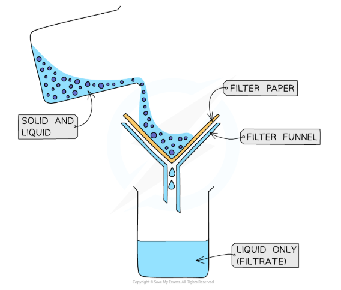
Distillation
Latin destillare = "to drip down"
A separation method that uses differences in boiling points to separate a solvent from a solution, or to separate liquids in a mixture.
"Simple distillation separates pure water from a salt solution."
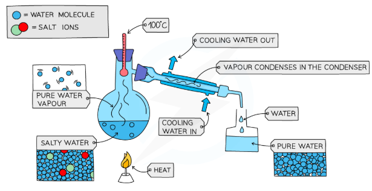
Crystallisation
Greek krystallos = "clear ice"
A method of obtaining a pure solid solute from a solution by slowly evaporating the solvent until crystals form. The crystals have a regular shape.
"Salt crystals can be obtained from seawater by crystallisation."
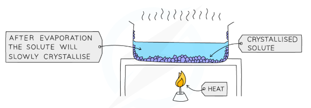
Chromatography
Greek chroma = "colour" + graphein = "to write"
A technique used to separate a mixture of substances that dissolve in a solvent. Different substances travel different distances up the paper because they have different solubilities.
"Paper chromatography can separate the different dyes in a food colouring."
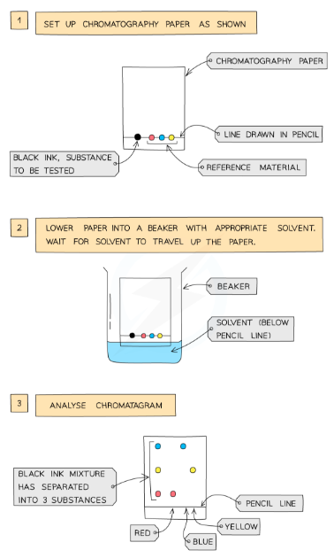
Solute / Solvent / Solution
Latin solvere = "to loosen, to dissolve"
Solute = the substance that dissolves (usually a solid).
Solvent = the liquid that does the dissolving.
Solution = the clear mixture formed when a solute dissolves in a solvent.
Solvent = the liquid that does the dissolving.
Solution = the clear mixture formed when a solute dissolves in a solvent.
"In salt water: salt = solute, water = solvent, salt water = solution."
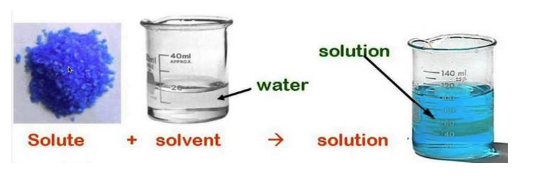
Pure substance
A substance made of only one type of particle (either an element or a compound). A pure substance has a sharp, exact melting and boiling point. Impurities make these ranges wider.
"Pure water always boils at exactly 100°C. Salt water boils above 100°C."
Pure — sharp point
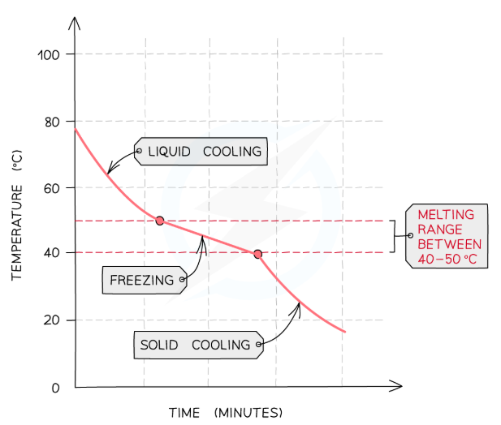
Impure — range
T3
Chemical Changes
15 words
▼
Acid
Latin acidus = "sour" (acids taste sour — think vinegar or lemon)
A substance with a pH below 7. Acids produce hydrogen ions (H⁺) when dissolved in water. They react with metals, bases, and alkalis.
"Hydrochloric acid (HCl), sulfuric acid (H₂SO₄), and citric acid are common acids."
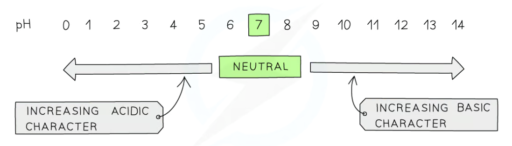
Alkali
Arabic al-qali = "the ashes" (early alkalis were made from plant ash dissolved in water)
A SOLUBLE base with a pH above 7. Alkalis produce hydroxide ions (OH⁻) in water. They react with acids to neutralise them.
"Sodium hydroxide (NaOH) and bleach are alkaline."
pH scale
Latin potentia hydrogenii = "power of hydrogen"
A scale from 0 to 14 that measures how acidic or alkaline a solution is. pH 0–6 = acidic. pH 7 = neutral. pH 8–14 = alkaline. The scale measures the concentration of H⁺ ions.
Indicator
Latin indicare = "to point out, to show"
A substance that changes colour depending on whether a solution is acidic, neutral, or alkaline. Used to test the pH of a substance.
"Litmus turns RED in acid and BLUE in alkali. Universal indicator gives a range of colours."
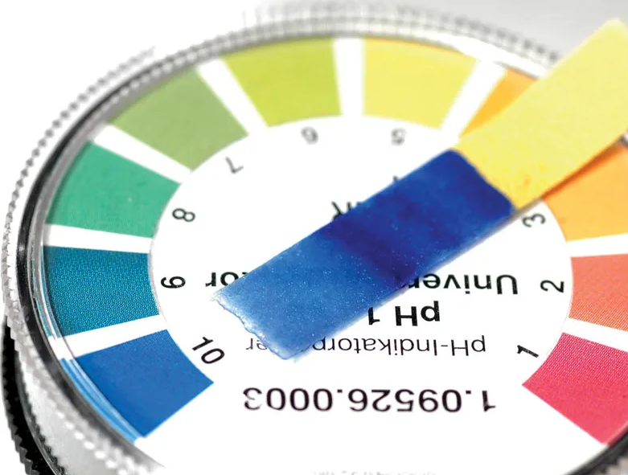
Neutralisation
The reaction between an acid and an alkali (or base) that produces a salt and water. The products have a pH closer to 7. The H⁺ and OH⁻ ions combine to form water.
"HCl + NaOH → NaCl + H₂O. The acid and alkali cancel each other out."
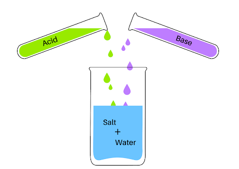
Salt
An ionic compound formed when an acid reacts with a base, alkali, or metal. The name of the salt comes from the acid used: hydrochloric acid → chloride salts; sulfuric acid → sulfate salts; nitric acid → nitrate salts.
"HCl + NaOH → NaCl (sodium chloride) + H₂O."
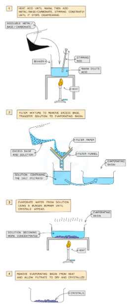
Oxidation
Greek oxys = "sharp, sour" (oxygen was once thought to be in all acids)
A reaction where a substance GAINS oxygen, OR LOSES electrons. Remember: OIL — Oxidation Is Loss (of electrons).
"Iron is oxidised when it rusts — it gains oxygen from the air."
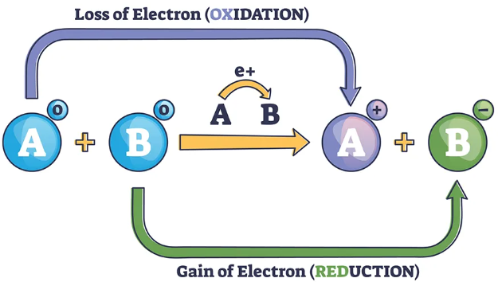
Reduction
Latin reducere = "to bring back, to restore" (the metal is restored to its original state)
A reaction where a substance LOSES oxygen, OR GAINS electrons. Remember: RIG — Reduction Is Gain (of electrons).
"Copper oxide is reduced to copper when hydrogen gas is passed over it."
Redox reaction
A reaction in which BOTH oxidation AND reduction happen at the same time. One substance loses electrons (is oxidised) while another gains electrons (is reduced).
"CuO + H₂ → Cu + H₂O. CuO is reduced (loses O); H₂ is oxidised (gains O)."
Electrolysis
Greek elektron (electricity) + lysis = "breaking apart"
The process of using electricity to break down (decompose) an ionic compound. The compound must be melted or dissolved in water so its ions can move freely.
"Electrolysis of molten lead bromide produces lead metal and bromine gas."
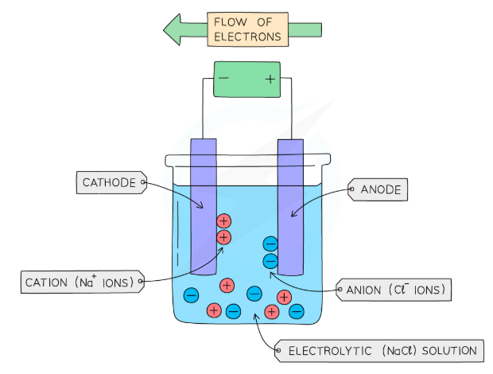
Electrolyte
The ionic liquid or solution that conducts electricity in an electrolysis cell. It must contain free-moving ions. It can be a molten ionic compound or an aqueous solution of an ionic compound.
"Molten NaCl is an electrolyte — the Na⁺ and Cl⁻ ions move freely."
Cathode
Greek kathodos = "the way downward"
The NEGATIVE electrode (−) in electrolysis. Positive ions (cations) are attracted to the cathode, where they gain electrons. REDUCTION occurs at the cathode.
"At the cathode: Cu²⁺ + 2e⁻ → Cu. Copper metal is deposited."
Anode
Greek anodos = "the way upward"
The POSITIVE electrode (+) in electrolysis. Negative ions (anions) are attracted to the anode, where they lose electrons. OXIDATION occurs at the anode.
"At the anode: 2Cl⁻ → Cl₂ + 2e⁻. Chlorine gas is produced."
Precipitation
Latin praecipitare = "to throw headlong, to fall"
A reaction where two solutions are mixed and an insoluble solid called a precipitate forms and falls to the bottom of the solution. Used to identify ions.
"Adding NaOH to a copper sulfate solution gives a blue precipitate of copper hydroxide."
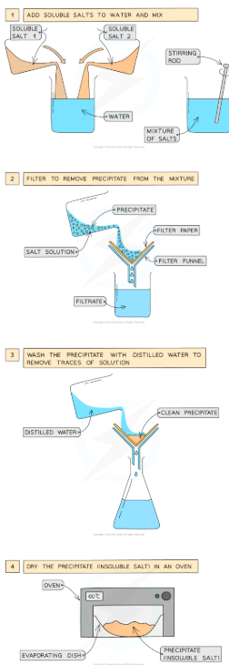
Displacement reaction
A reaction where a more reactive metal (or halogen) pushes out (displaces) a less reactive element from its compound. The more reactive element takes its place.
"Zn + CuSO₄ → ZnSO₄ + Cu. Zinc is more reactive than copper, so it displaces it."
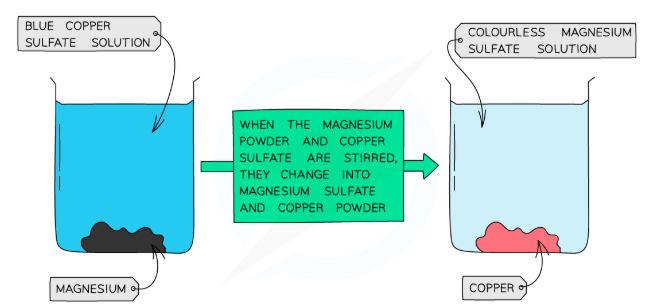
T4
Extracting Metals and Equilibria
11 words
▼
Reactivity series
A list of metals arranged in order from most reactive (top) to least reactive (bottom). It is used to predict displacement reactions and decide how a metal is extracted.
"Potassium (K) is at the top — very reactive. Gold (Au) is at the bottom — barely reacts at all."
📷 Add image here
Full reactivity series table: K, Na, Ca, Mg, Al, (C), Zn, Fe, (H), Cu, Ag, Au. Three zones labelled: "extracted by electrolysis" (top), "extracted by carbon" (middle), "found native" (bottom).
Ore
A naturally occurring rock that contains enough of a metal compound to make it economically worth extracting. The metal is usually found as an oxide or sulfide.
"Haematite is an iron ore — it contains iron(III) oxide, Fe₂O₃."
📷 Add image here
Photo of haematite (iron ore, reddish-brown) and bauxite (aluminium ore, earthy red-brown). Label each with the metal it contains.
Blast furnace
A very large industrial furnace used to extract iron from iron ore (haematite). Iron oxide is reduced by carbon monoxide (made from coke) at very high temperatures. Limestone removes impurities as slag.
📷 Add image here
Labelled blast furnace diagram: raw materials (iron ore, coke, limestone) fed in at top; hot blast air injected at the side; molten iron and slag tapped off at the bottom.
Alloy
Old French aloier = "to combine, to mix"
A MIXTURE of a metal with one or more other elements (usually other metals or carbon). Alloys are harder and stronger than pure metals because the different-sized atoms disrupt the regular layers, making it harder for layers to slide.
"Steel is iron + carbon. Bronze is copper + tin. Brass is copper + zinc."
📷 Add image here
Two particle diagrams side by side: pure metal (all equal-sized atoms in neat layers, easy to slide) vs alloy (different-sized atoms disrupting layers, hard to slide). Label each.
Corrosion
Latin corrodere = "to gnaw away at"
The gradual destruction of a metal surface by chemical reactions with substances in its environment, especially oxygen and water. Corroded metals become weaker.
"Iron corrodes in damp air to form rust."
📷 Add image here
Photo of a corroded/rusty iron structure (bridge, car body, nail). Label: "iron + oxygen + water → rust".
Rusting
The specific corrosion of iron and steel. Iron reacts with BOTH oxygen AND water to form hydrated iron(III) oxide (rust). If either oxygen or water is absent, rusting does NOT occur.
📷 Add image here
Classic rusting experiment: three test tubes with iron nails — (1) dry air only: no rust; (2) boiled water, no air: no rust; (3) air + water: rust forms. Label all three.
Reversible reaction
A reaction that can go in BOTH directions — forward to make products, and backward to re-form the original reactants. Written with the symbol ⇌ (two arrows pointing in opposite directions).
"N₂ + 3H₂ ⇌ 2NH₃. Ammonia can form and can also break back down."
📷 Add image here
Diagram showing forward arrow (reactants → products) and backward arrow (products → reactants), with the ⇌ symbol explained. Example: heating blue CuSO₄ ⇌ white CuSO₄.
Dynamic equilibrium
When a reversible reaction is in a CLOSED container, the forward and reverse reactions happen at the same rate. The concentrations of reactants and products stay constant — but BOTH reactions are still happening all the time.
"At equilibrium in the Haber Process, ammonia is still being made and broken down — at the same rate."
📷 Add image here
Two graphs: (1) rate of forward and reverse reactions over time — both converge to same rate at equilibrium. (2) concentration vs time — lines level off at equilibrium. Label "dynamic equilibrium".
Le Chatelier's Principle
If you change the conditions of a system at equilibrium (e.g., temperature, pressure, or concentration), the equilibrium will SHIFT to oppose the change. This is a way of predicting which direction the reaction will move.
"Increasing pressure on N₂ + 3H₂ ⇌ 2NH₃ shifts equilibrium RIGHT (towards fewer moles of gas)."
📷 Add image here
Summary table or diagram: change made (increase temperature / increase pressure / increase concentration) → direction of shift → effect on yield. Arrows showing left/right shift.
Haber Process
The industrial process used to make ammonia (NH₃). Nitrogen (from air) and hydrogen (from natural gas) are combined. Conditions: 450°C, 200 atmospheres pressure, iron catalyst. This is a reversible reaction so some gas is always recycled.
📷 Add image here
Haber Process flow diagram: N₂ + H₂ inputs → reactor (450°C, 200 atm, iron catalyst) → condenser (NH₃ liquefies and is collected) → unreacted N₂/H₂ recycled back in.
Phytomining / Bioleaching
Phytomining: growing plants on low-grade ore. The plants absorb the metal, then are burned and the metal is extracted from the ash.
Bioleaching: bacteria feed on low-grade ore and produce a metal-rich solution, from which the metal is extracted.
Bioleaching: bacteria feed on low-grade ore and produce a metal-rich solution, from which the metal is extracted.
📷 Add image here
Side-by-side diagrams: (1) plants growing in contaminated soil, being harvested and burned → metal from ash. (2) bacteria solution on ore pile → leachate collected → metal extracted by electrolysis/displacement.
T5
Separate Chemistry 1
8 words
▼
Transition metal
A metal found in the central d-block of the periodic table (between Groups 2 and 3). Transition metals are hard, dense, have high melting points, form coloured compounds, and many can act as catalysts.
"Iron, copper, nickel, zinc, titanium, and chromium are transition metals."
📷 Add image here
Periodic table with the d-block (central block) highlighted in a different colour. Label well-known transition metals. Show coloured solution examples (blue CuSO₄, green NiSO₄, yellow K₂CrO₄).
Catalyst
Greek katalysis = "breaking down" (it breaks down the energy barrier)
A substance that speeds up a chemical reaction WITHOUT being used up itself. It works by providing a different, lower-energy route for the reaction. It is still present at the end.
"Iron is the catalyst in the Haber Process. Manganese dioxide is the catalyst for decomposing H₂O₂."
📷 Add image here
Energy profile diagram showing two curves for the same reaction: without catalyst (high energy barrier) and with catalyst (lower energy barrier). Label activation energy on both.
Covalent bond
Latin co- = "together" + valere = "to be strong"
A strong chemical bond formed when two non-metal atoms SHARE a pair of electrons. Each atom contributes one electron to the shared pair.
"H₂ has one covalent bond (one shared pair). O₂ has a double covalent bond (two shared pairs)."
📷 Add image here
Dot-and-cross diagrams for H₂ and Cl₂. Highlight the shared electron pair in the overlap region. Label "covalent bond" with an arrow.
Giant covalent structure
A solid where millions of atoms are all joined by covalent bonds in a continuous 3D network. These structures are very hard and have extremely high melting points because you must break many strong covalent bonds to melt them.
"Diamond (C) and silicon dioxide (SiO₂) are giant covalent structures."
📷 Add image here
Ball-and-stick model of diamond: each carbon bonded to 4 others in a 3D tetrahedral network. Label "giant covalent structure — very hard, very high melting point".
Fullerene
Named after architect Buckminster Fuller, who designed geodesic dome structures
A form of carbon where atoms are bonded in closed cage-like structures (spheres or tubes). The most famous is buckminsterfullerene C₆₀ (60 carbon atoms in a ball). Carbon nanotubes are also fullerenes.
📷 Add image here
Diagram of C₆₀ (buckminsterfullerene): the "football" cage of hexagons and pentagons. Also show a carbon nanotube (rolled graphene sheet) beside it.
Nanoparticle
Greek nanos = "dwarf"
An extremely small particle with a size between 1 and 100 nanometres (nm). Because they are so tiny, they have a very large surface area compared to their volume, which gives them special properties.
"Silver nanoparticles kill bacteria and are used in antibacterial clothing and dressings."
📷 Add image here
Scale comparison diagram: atom (0.1 nm) → nanoparticle (1–100 nm) → bacterium (1,000 nm) → human hair (80,000 nm). Show relative sizes clearly.
Displayed formula
A diagram of a molecule that shows EVERY atom and EVERY bond as lines. Each line between atoms represents a pair of shared electrons (a covalent bond). It shows the actual arrangement of atoms.
"The displayed formula of methane shows a C in the centre with four single lines going to four H atoms."
📷 Add image here
Displayed formulas of methane (CH₄), ethane (C₂H₆), and ethanol (C₂H₅OH) side by side, with all bonds shown as lines between atom symbols.
Intermolecular forces
Latin inter = "between" + molecula = "small mass"
Weak forces of attraction that act BETWEEN molecules (not within them). They are much weaker than covalent bonds. The larger the molecule, the stronger its intermolecular forces — and the higher its boiling point.
"Larger alkanes have stronger intermolecular forces — they need more energy to boil."
📷 Add image here
Diagram showing two molecules. Dashed arrows between them = weak intermolecular forces. Solid lines within each molecule = strong covalent bonds. Clear contrast labelled.
T6
Groups in the Periodic Table
7 words
▼
Group
A vertical COLUMN in the periodic table. Elements in the same group have the same number of electrons in their outermost shell, so they have similar chemical properties. Groups are numbered 1, 2, 3…7, 0.
"Group 1 contains Li, Na, K. They all have 1 outer electron and react with water."
📷 Add image here
Periodic table with one group (e.g., Group 1) highlighted as a vertical column. Label it "Group 1 — all have 1 outer electron". Show outer shell diagrams for Li, Na, K beside it.
Period
A horizontal ROW in the periodic table. Elements in the same period have electrons in the same number of shells. Period 1 has 1 shell; Period 2 has 2 shells; Period 3 has 3 shells, and so on.
"Period 3 contains Na, Mg, Al, Si, P, S, Cl, Ar — all have 3 electron shells."
📷 Add image here
Periodic table with Period 3 highlighted as a horizontal row. Electron shell diagrams for Na and Cl beside it showing 3 shells.
Alkali metals (Group 1)
The very reactive metals in Group 1 (Li, Na, K, Rb, Cs, Fr). They all have 1 outer electron, which they lose easily. Reactivity INCREASES going down the group. They react with water to produce hydrogen gas and a metal hydroxide.
"2Na + 2H₂O → 2NaOH + H₂. Potassium reacts faster than sodium — it burns with a lilac flame."
📷 Add image here
Photo of sodium reacting with water (fizzing, moving across surface). Reactivity trend arrow pointing down Group 1 with Li (least) to Cs (most). Word equation beside it.
Halogens (Group 7)
Greek halos = "salt" + genes = "producing" (they form salts with metals)
Non-metal elements in Group 7 (F, Cl, Br, I, At). They all have 7 outer electrons and need just one more to complete their outer shell. Reactivity DECREASES going down the group.
"Cl₂ = pale green gas; Br₂ = brown/orange liquid; I₂ = grey/purple solid."
📷 Add image here
Colour samples or photos of Cl₂ (pale green gas), Br₂ (dark orange-brown liquid), I₂ (grey-purple solid) arranged vertically in Group 7 order. Reactivity arrow pointing upward.
Halogen displacement
A more reactive halogen can DISPLACE (push out) a less reactive halogen from its salt solution. This causes a visible colour change in the solution.
"Cl₂ + 2KBr → 2KCl + Br₂. The solution turns orange-brown as bromine is displaced."
📷 Add image here
Test tube diagrams: colourless KBr solution + Cl₂ water → orange-brown solution (Br₂ formed). Colourless KI solution + Cl₂ water → brown solution (I₂ formed). Colour changes labelled.
Noble gases (Group 0)
The unreactive, colourless gases in Group 0 (He, Ne, Ar, Kr, Xe, Rn). They are unreactive because they already have a FULL outer electron shell — they do not need to gain or lose electrons. Also called inert gases.
"Argon is used to fill light bulbs. Helium is used in balloons. Neither reacts."
📷 Add image here
Electron shell diagrams for He (2 — full), Ne (2,8 — full), Ar (2,8,8 — full). Label "full outer shell = no need to react". Photo of neon sign glowing.
Flame test
A method used to identify metal ions. A sample is held in a Bunsen flame. Different metal ions produce characteristic flame colours.
"Li⁺ = red; Na⁺ = yellow/orange; K⁺ = lilac; Ca²⁺ = orange-red; Cu²⁺ = green."
📷 Add image here
Colour swatch table or photos of each flame colour: lithium (red), sodium (yellow), potassium (lilac), calcium (orange-red), copper (green-blue). Real flame test photos work very well here.
T7
Rates of Reaction and Energy Changes
9 words
▼
Rate of reaction
How FAST a chemical reaction occurs — how quickly the reactants are used up or how quickly the products are formed. Rate can be increased by changing concentration, temperature, surface area, or adding a catalyst.
📷 Add image here
Graph of volume of gas produced vs time for a fast reaction (steep line) and slow reaction (gentle line). Same final volume, different gradients. Label "steeper line = faster rate".
Collision theory
A model that explains how chemical reactions happen. For a reaction to occur, particles must COLLIDE with enough energy (at least the activation energy) AND in the correct orientation. More frequent/energetic collisions = faster rate.
📷 Add image here
Diagram showing (a) successful collision: correct orientation + enough energy → reaction, products form. (b) unsuccessful collision: wrong angle or too little energy → no reaction, particles bounce off.
Activation energy
The MINIMUM energy that colliding particles must have for a reaction to actually take place. Only collisions with energy equal to or greater than the activation energy lead to a reaction.
📷 Add image here
Energy profile diagram (reaction coordinate graph): reactants on the left, energy barrier (peak) in the middle, products on the right. Label "activation energy" as the height from reactants to the peak.
Concentration
Latin concentrare = "to bring to the centre"
The amount of a dissolved substance in a given volume of solution. A more concentrated solution has more particles in the same volume, so collisions happen more often and the rate increases.
"Concentrated acid reacts faster with marble chips than dilute acid."
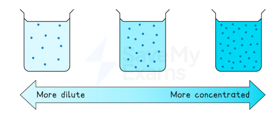
Surface area
The total area of a solid that is exposed to the reactant. Breaking a solid into smaller pieces INCREASES the surface area — more particles are exposed, so more collisions can happen and the rate is faster.
"Marble powder reacts faster with acid than marble chips — same mass, much bigger surface area."
📷 Add image here
Diagram: one large marble chip (few surfaces exposed) vs the same mass as many small pieces/powder (many surfaces exposed). Show how more surface = more contact with acid particles.
Exothermic reaction
Greek exo = "outside" + therme = "heat" (heat goes OUT to the surroundings)
A reaction that RELEASES energy (usually as heat) to the surroundings. The temperature of the surroundings RISES. The products have LESS energy than the reactants.
"Burning, neutralisation, oxidation, and respiration are all exothermic."
📷 Add image here
Energy profile diagram: products lower than reactants (energy released). Thermometer beside a beaker showing temperature rising. Label ΔH as negative for exothermic.
Endothermic reaction
Greek endo = "inside/within" + therme = "heat" (heat goes IN from the surroundings)
A reaction that ABSORBS energy (usually as heat) FROM the surroundings. The temperature of the surroundings FALLS. The products have MORE energy than the reactants.
"Thermal decomposition, dissolving ammonium nitrate in water, and photosynthesis are endothermic."
📷 Add image here
Energy profile diagram: products higher than reactants (energy absorbed). Thermometer showing temperature falling. Label ΔH as positive for endothermic.
Bond energy
The energy needed to break one mole of a particular covalent bond. Breaking bonds REQUIRES energy (endothermic). Making bonds RELEASES energy (exothermic). The overall energy change = energy to break bonds MINUS energy released making bonds.
📷 Add image here
Worked bond energy calculation for H₂ + Cl₂ → 2HCl. Show bonds broken (H−H, Cl−Cl) with energy values absorbed. Show bonds made (H−Cl ×2) with energy released. Net energy change calculated.
Temperature (effect on rate)
Increasing temperature makes particles move FASTER — they collide more often AND with more energy. This means more collisions have energy ≥ the activation energy, so the rate of reaction increases significantly.
📷 Add image here
Maxwell–Boltzmann distribution: two bell curves on the same axes — low temperature (peak left, fewer particles past Ea) vs high temperature (peak right, many more particles past Ea). Activation energy as a vertical line.
T8
Fuels and Earth Science
12 words
▼
Hydrocarbon
hydro (hydrogen) + carbon — contains ONLY these two elements
A compound that contains ONLY hydrogen and carbon atoms. Hydrocarbons are found in crude oil and natural gas and are used as fuels.
"Methane (CH₄) and octane (C₈H₁₈) are hydrocarbons."
📷 Add image here
Displayed formulas of methane (CH₄), ethane (C₂H₆), propane (C₃H₈) showing only C and H atoms connected by lines. Label "only carbon and hydrogen".
Crude oil
A fossil fuel found underground. It is a thick, dark mixture of many different hydrocarbon molecules. It was formed over millions of years from ancient sea organisms. It is a finite (non-renewable) resource.
📷 Add image here
Photo of crude oil (dark, thick liquid) alongside a diagram showing its formation: ancient sea creatures → sediment → heat and pressure over millions of years → crude oil reservoir.
Fractional distillation
The industrial method used to separate crude oil into groups of hydrocarbons called FRACTIONS. The crude oil is heated and the vapours rise up a tall column. Shorter molecules (lower boiling points) rise higher up and condense nearer the top; longer molecules condense lower down.
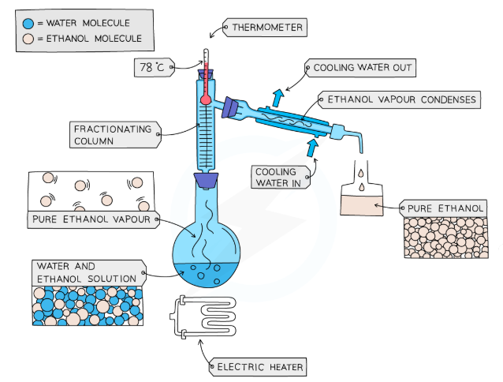
Alkane
A SATURATED hydrocarbon — it has only single C−C bonds. General formula: CₙH₂ₙ₊₂. The first four alkanes are methane, ethane, propane, and butane. Alkanes are found in crude oil and burn well as fuels.
"Methane CH₄, ethane C₂H₆, propane C₃H₈, butane C₄H₁₀."
📷 Add image here
Displayed structural formulas of methane, ethane, propane, butane side by side. Label "saturated — single bonds only". Include general formula CₙH₂ₙ₊₂ with an example substitution (n=2 → C₂H₆).
Alkene
An UNSATURATED hydrocarbon with at least one C=C double bond. General formula: CₙH₂ₙ. More reactive than alkanes — the double bond can open up. They are produced by cracking alkanes and are used to make polymers.
"Ethene C₂H₄ has a C=C double bond. It decolourises orange bromine water."
📷 Add image here
Displayed formula of ethene with the C=C double bond highlighted. Test with bromine water: orange → colourless (shows unsaturation). Label "unsaturated — has a double bond".
Combustion
Latin combustio = "a burning"
Complete combustion: burning in PLENTY of oxygen → produces only CO₂ and H₂O. Clean, efficient, blue flame.
Incomplete combustion: burning in LIMITED oxygen → produces CO (toxic!) and/or soot (C). Yellow/smoky flame.
Incomplete combustion: burning in LIMITED oxygen → produces CO (toxic!) and/or soot (C). Yellow/smoky flame.
"CH₄ + 2O₂ → CO₂ + 2H₂O (complete). CH₄ + O₂ → C + 2H₂O (incomplete — soot forms)."
📷 Add image here
Side-by-side comparison: (left) complete combustion — blue flame, CO₂ + H₂O products; (right) incomplete combustion — yellow/smoky flame, CO + soot + H₂O products. Label both clearly.
Cracking
The process of breaking LONG-chain hydrocarbon molecules (from crude oil) into SHORTER, more useful ones. Done by heating to high temperatures, often with a catalyst. Produces shorter alkanes AND alkenes (which are used to make polymers).
"C₁₀H₂₂ → C₈H₁₈ + C₂H₄. A long alkane → shorter alkane + an alkene."
📷 Add image here
Diagram showing a long hydrocarbon chain being cut (cracked) into a shorter alkane + an alkene. Laboratory cracking apparatus showing liquid paraffin vapour over heated aluminium oxide catalyst.
Polymer
Greek poly = "many" + meros = "part" (many repeated units)
A very large molecule made by joining many small molecules (monomers) together in a long chain. Most plastics are polymers. The properties depend on the monomer used and how the chains are arranged.
"Poly(ethene) is a polymer made from thousands of ethene monomer units."
📷 Add image here
Addition polymerisation diagram: many ethene monomers (C=C) → poly(ethene) chain (–CH₂–CH₂–)ₙ. Show the C=C bond opening and the repeat unit in brackets with subscript n.
Monomer
Greek mono = "one" + meros = "part" (one single unit)
A small molecule that can join with many identical or similar molecules to form a polymer. Many monomers → one polymer.
"Ethene is the monomer for poly(ethene). Propene is the monomer for poly(propene)."
📷 Add image here
Simple diagram: single ethene molecule (monomer) repeated n times → long polymer chain. Show the bracket notation (–CH₂–CH₂–)ₙ and explain the n.
Greenhouse gas
A gas in the Earth's atmosphere that absorbs heat (infrared radiation) re-emitted from the Earth's surface and sends it back to Earth, trapping warmth. The main greenhouse gases are CO₂, CH₄ (methane), water vapour, and N₂O.
📷 Add image here
Greenhouse effect diagram: sunlight passes through atmosphere → Earth absorbs and re-emits as infrared → greenhouse gas molecules absorb and re-emit infrared back towards Earth. Label CO₂, CH₄, H₂O.
Climate change
Long-term shifts in global temperatures and weather patterns. Since the Industrial Revolution, human burning of fossil fuels has increased CO₂ levels, enhancing the greenhouse effect and causing average global temperatures to rise.
📷 Add image here
Two graphs side by side: (1) rising atmospheric CO₂ concentration from 1800 to present (Keeling curve shape). (2) rising average global temperature over the same period. Correlation between the two.
Fossil fuel
A fuel formed over millions of years from the remains of ancient organisms. The main fossil fuels are coal, oil, and natural gas. They are non-renewable — once used, they cannot be replaced on a human timescale.
"Burning coal releases CO₂ that was stored millions of years ago."
📷 Add image here
Photos or icons of the three fossil fuels: coal (black lump), oil (droplet/barrel), natural gas (flame). Label each as non-renewable. Arrow showing carbon cycle disruption when fossil fuels are burned.
T9
Separate Chemistry 2
9 words
▼
Titration
French titre = "standard/qualification" (finding the exact concentration)
A laboratory technique to find the exact volume of one solution that completely reacts with a known volume of another. Used to find the concentration of an unknown acid or alkali.
"We run alkali from a burette into acid in a flask until the indicator changes colour — this is the endpoint."
📷 Add image here
Labelled titration apparatus: burette (filled with alkali) on a clamp stand, conical flask (acid + indicator) below. Show the stopcock/tap. Label: titre = volume added to reach endpoint.
Calorimetry
Latin calor = "heat" + Greek metron = "measure"
A method to measure the energy change in a chemical reaction. The reaction takes place in or near water in a calorimeter (usually a polystyrene cup). The temperature change of the water is measured and used to calculate the energy transferred.
"Q = mcΔT, where Q = energy (J), m = mass of water (g), c = 4.18, ΔT = temperature change (°C)."
📷 Add image here
Labelled calorimetry setup: polystyrene cup with lid, thermometer, water inside, reactants. Show the equation Q = mcΔT with each variable labelled. A worked example with numbers helps enormously.
Alcohol
Arabic al-kuhl = originally a very fine powder; later any highly refined or distilled substance
An organic compound containing a hydroxyl (–OH) functional group attached to a carbon chain. The simplest alcohols: methanol (CH₃OH), ethanol (C₂H₅OH), propanol (C₃H₇OH). General formula: CₙH₂ₙ₊₁OH.
"Ethanol is the alcohol in alcoholic drinks. It is also used as a solvent and fuel."
📷 Add image here
Displayed formula of ethanol with the –OH (hydroxyl) group highlighted in a different colour and labelled "functional group". Table: methanol, ethanol, propanol, butanol with formulas.
Carboxylic acid
Latin carbo (carbon) + acidus (sour) — these acids have a sour taste
An organic compound containing a carboxyl (–COOH) functional group. They are weak acids. They are formed when alcohols are oxidised. General formula: CₙH₂ₙ₊₁COOH.
"Ethanoic acid (CH₃COOH) is the acid in vinegar. Methanoic acid is in ant stings."
📷 Add image here
Displayed formula of ethanoic acid with the –COOH group highlighted and labelled "carboxyl functional group". Show the oxidation of ethanol → ethanoic acid with an arrow.
Ester
An organic compound formed by the reaction between a carboxylic acid and an alcohol (called esterification). Water is also produced. Esters have fruity smells and are used in perfumes and food flavourings.
"Ethanol + ethanoic acid → ethyl ethanoate (ester) + water."
📷 Add image here
Esterification equation: alcohol (–OH highlighted) + carboxylic acid (–COOH highlighted) → ester (–COO–) + water. Show where the water comes from (the –OH from acid and –H from alcohol combine).
Fermentation
Latin fermentum = "yeast, leaven"
The process by which yeast enzymes convert sugars (glucose) into ethanol and carbon dioxide. This occurs WITHOUT oxygen (anaerobic). It is used to produce alcoholic drinks and biofuels.
"C₆H₁₂O₆ → 2C₂H₅OH + 2CO₂. Glucose → ethanol + carbon dioxide."
📷 Add image here
Fermentation flask setup: sugar solution + yeast, sealed flask (no air), delivery tube to limewater (which turns cloudy proving CO₂ is produced). Word equation and balanced equation labelled.
Functional group
A specific atom or group of atoms within an organic molecule that determines how that molecule reacts. Every homologous series has a characteristic functional group. Changing the functional group changes the type of organic compound.
"–OH = alcohol. –COOH = carboxylic acid. –COO– = ester. C=C = alkene."
📷 Add image here
Summary table: 4 rows showing (1) compound type, (2) functional group symbol, (3) functional group highlighted in a displayed formula, (4) example. Cover alkene, alcohol, carboxylic acid, ester.
Addition polymer
A polymer formed when unsaturated monomer molecules (containing C=C double bonds) join together. The C=C bond OPENS UP and the monomers simply add on to each other — no other product is made.
"n (CH₂=CH₂) → (–CH₂–CH₂–)ₙ. Ethene monomers → poly(ethene)."
📷 Add image here
Addition polymerisation mechanism diagram: row of ethene molecules (each with C=C) → C=C bonds open → long poly(ethene) chain (–CH₂–CH₂–)ₙ. Arrow showing the opening of the double bond.
Condensation polymerH
A polymer formed when two different types of monomer react together. Each time a bond forms between two monomers, a SMALL MOLECULE (usually water) is released. This is why it is called condensation — water condenses out.
"Nylon and polyester are condensation polymers. Both release water when made."
📷 Add image here
Condensation polymerisation diagram: two monomer types (A and B) alternating in a chain. Each join has a water molecule leaving. Label: "condensation = water released". Show nylon or polyester formation.